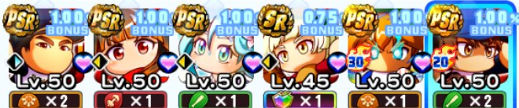
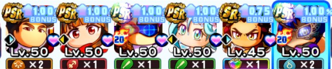

イベキャラ データ
[水着]泡瀬満里南のデータ・イベントまとめ
[水着]泡瀬満里南の基本情報
| 得意練習 | メンタル(投手) / スタミナ |
|---|---|
| イベント前後 | 前 |
| 基礎上限※ | コントロール上限：10 |
| 野手金特 | 看破 |
| 投手金特 | オリジナル変化球(フォーク方向)＋スクランブル 先手必奪＋スクランブル |
| 友情特殊能力 | 投手で獲得：潮風の記憶 |
※ 覚醒で付く分も表記
[水着]泡瀬満里南の重要ボーナス
| 練習効果アップ | 10%⇒15%(PSR42)⇒20%(Lv45)⇒30%(Lv50) |
|---|---|
| スペシャルタッグボーナス | 220% |
| コントロール上限アップ | 10 |
その他ボーナスはこちらをタップ
| 初期評価 | 70(SR) 80(PSR) |
|---|---|
| 精神ボーナス | 6 |
| スペシャルタッグ「メンタル」 | 12 |
| コツイベントボーナス | 40% |
| 試合経験点ボーナス | 30% |
| 得意練習率アップ | 0%⇒10%(SR37)⇒20%(Lv40) |
| コツレベルボーナス | 2 |
[水着]泡瀬満里南のイベント詳細
金特イベント
準備中です。
共通イベント
準備中です。
友情イベント
準備中です。
自己紹介
準備中です。
[水着]泡瀬満里南の評価
準備中です。
[水着]泡瀬満里南の使用デッキ例
ロマン開花學園（先・メイン）

ロマン開花學園（中・メイン）

[水着]泡瀬満里南の選手能力
| 選手ランク | A88 |
|---|---|
| メインポジション | 投 |
| サブポジション | なし |
| 利き腕 | 右投右打 |
野手能力
弾道1
ミートG15
パワーG1
走力F28
肩力C64
守備力D55
捕球D50
投手能力
球速146km/h
コントロールC64
スタミナF38
野手特殊能力
意外性
投手特殊能力
打たれ強さ◎ノビ◎キレ○威圧感緩急○警戒解除